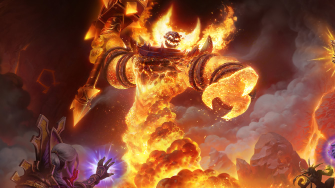
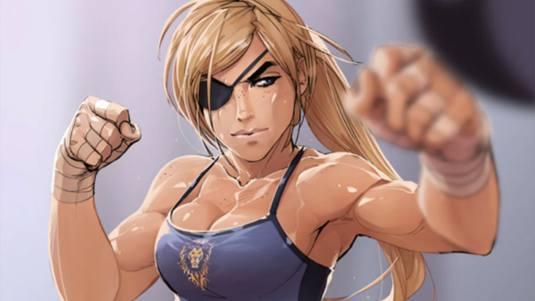
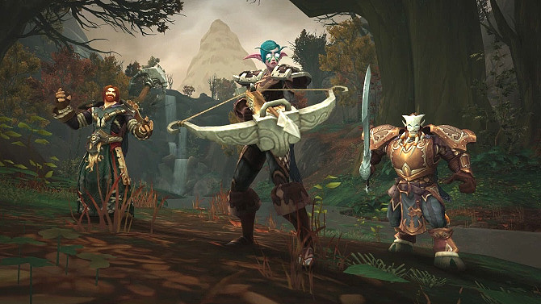
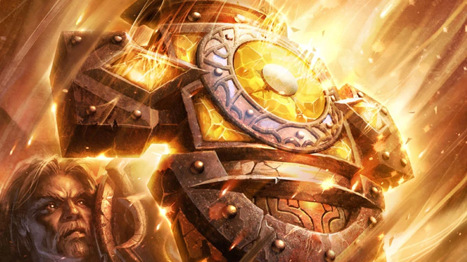
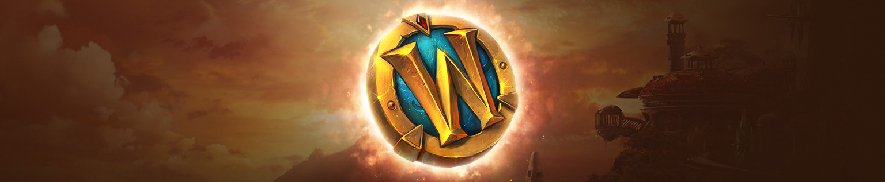
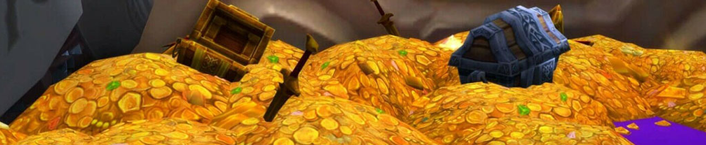

-

Поэтапное прохождение
Для погружения в лор Warcraft'а, мы создали систему, при которой вам нужно будет проходить все подземелья по очереди. Прочувствуйте игру заново. Не пропустите те ощущения, как когда-то. Насладитесь каждым инстом и рейдом. И вам не обязательно искать толпу для прохождения, можно попытаться пройти все одному.
-

Комфортная прокачка
Качайтесь как душе угодно. Хотите профессиями, хотите ачивментами, а хотите голосованием. Опыт льется рекой, как за PVP, так и за убийство мировых боссов. И 80-й уровень это не конец, дальше будет все намного интереснее.
-

Максимальная свобода
Всем расам доступны все классы. Почти со всех вещей снята приватность. В книгах доступно изучение до 20 способностей чужих классов, а для распределения талантов доступно 91 очко. Торговать и кооперироваться можно с игроками любых фракций. А чат сделан общим для всех.
-

Новые характеристики
Реализована система случайных статов на вещах и оружии. На найденном ржавом мече могут прокнуть отличные характеристики, и можно еще долго проходить с таким ножиком. Бесполезные вещи переработаны, еда/бинты/питье стали восстанавливать в процентах, а улучшенные статы в профессиях делают их невероятно полезными.
Более 100 модификаций Wraith of the Lich King
сейчас 80 человек в игре
РЕГИСТРАЦИЯ
Для входа на наш сервер вам нужно иметь логин и пароль, который вы можете получить одним из двух следующих способов.
Через бота ВКонтакте
Напишите любой текст нашему боту в группе ВКонтакте. Вам ответит автоматическая система, которая создаст для вас логин и пароль. А, так же, даст команды по управлению аккаунтом.
Перейти к ботуСКАЧИВАНИЕ ФАЙЛОВ
Для игры на нашем сервере нужен клиент World of Warcraft Wrath of the Lich King 3.3.5a и лаунчер от нашего проекта.
Если клиент игры у вас есть
Обязательно включайте игру каждый раз через наш лаунчер. Он делает автоматически все что нужно и самообновляется. Запускается из любой папки.
Скачать лаунчер◻️ Если у вас несколько клиентов Warcraft, то убедитесь, что наш лаунчер нашел нужный клиент, проверьте путь нажав значек Папки.
◻️ В стандартном клиенте WOW уже есть лаунчер Launcher.exe, это не тот, его не запускайте!
◻️ Без наших патчей играть у нас невозможно, не пытайтесь просто поменять сведения в realmlist.wtf
Если лаунчер выдает ошибки
◻️ Из-за санкций и блокировок из некоторых стран лаунчер может не видеть соединение с сервером, тогда используйте ручной патч.
1. Скачайте и откройте свежий ручной патч. Это простой архив. В нем вы увидите файлы и папки.
2. Откройте папку где лежит ваш wow.exe, и перетащите все файлы из патча в эту папку. Система спросит заменить ли файлы? Ответьте да.
3. Запускайте игру через файл wow.exe
Если клиента игры у вас нет
1. Скачайте и установите программу для загрузки .torrent файлов.
2. Скачайте торрент файл и запустите его, чтоб загрузить саму игру.
◻️ После скачивания клиента игры, не забудьте выключить торрент, чтоб он не пытался докачивать эту игру во время ее запуска!
ВОССТАНОВЛЕНИЕ ДОСТУПА
Забыли свои регистрационные данные? Не беда, воспользуйтесь одним из следующих пунктов.
Вспомнить через бота ВКонтакте
Напишите любой текст нашему боту в группе ВКонтакте. Вам ответит автоматическая система, которая напомнит вам логин и пароль.
Перейти к ботуСлучайные статы и соло прохождение из Diablo
ГОЛОСОВАНИЕ
Ежедневно голосуя за наш проект в рейтинге серверов MMOTOP вы можете постоянно получать полезные игровые бонусы.
-
Бонусы до 80-го уровня
Если ваш персонаж еще не достиг 80 уровня, то за каждый голос вы будете получать:
- Игровой уровень 1 шт.
- VIP-статус до конца дня. -
Начисление голосов
Рейтинг серверов MMOTOP некоторое время обрабатывает ваши голоса и они зачисляются не сразу, а примерно через 20-40 минут. Это связано с проверкой голосов и их записью в специальный файл к которому подключаются наши скрипты.
-
Бонусы после 80-го уровня
Прокачавшись, вы будете получать за каждый голос:
- Донат жетон 1 шт.
- Ледяной шар 1 шт.
- Эмблемы льда 50 шт.
- VIP-статус до конца дня. -
Обратите внимание
- После сдвигания слайдера на сайте MMOTOP, убедитесь, что вписываете имя персонажа, а не имя аккаунта.
- Если вы голосуете не честно (с двух телефонов, за разные проекты и т.д.), то рейтинг может аннулировать ваши голоса. Мы тут ничем не поможем, пишите в техподдержку рейтинга, а не нашим модераторам. -
Как проголосовать?
Нажмите на кнопку ниже, она переведет вас на сайт MMOTOP, найдите там еще кнопку Голосовать и нажмите на нее. Вас попросят сдвинуть вправо красный слайдер, сделайте это. Впишите имя вашего персонажа, поставьте галочку в капче [Я не робот] и подтвердите кнопкой Проголосовать.
Голосовать -
Как получить бонусы?
В игре пропишите в чат команду .get, чтоб получить награду за голоса. И команду .don, чтоб проверить баланс донат жетонов.
ПОЖЕРТВОВАНИЯ
Поддержка проекта деньгами лучший путь к его развитию. А для улучшения игры мы трудимся постоянно.
Внесение
Условия
Все это на добровольной основе. Вашими деньгами вы помогаете серверу, а не покупаете что-то.
Мы никогда не просим и, тем более, не заставляем помогать нам финансово, это Ваше личное решение.
-
Использование
Перечислив нам финансовую помощь вы сможете увидеть свое вознаграждение в игре, написав команду
.donate
Донат жетоны обмениваются у донат NPC в игре. -
Сохранность
Если вы получили какой-то из бонусов, то ответственность за его сохранность ложится на Вас.
-
Начисление
Обратите внимание, что бонусы начисляются на персонажа, а не на весь аккаунт, и переброс бонусов нами не предусмотрен.
◻️ Исключением являются сумки со статами, их можно перемещать между персонажами 1-го аккаунта. Напишите в чат .transfer имя, чтоб узнать подробнее. -
Возврат
Пожертвования не возвращаются и не защищают от бана.
Формы Оборотня и Вампира из Skyrim
ИЗВЕСТНЫЕ НЕДОЧЕТЫ
Список багов о которых мы знаем, но не можем, пока, починить. Вы тоже должны знать эту информацию.
-
Ошибка кеширования
Иногда, когда мы об этом говорим в новостях, вам нужно стирать папку Cache, чтоб обновились характеристики вещей в игре. По какой-то причине, если не раздеть всех персонажей, начинает выскакивать ошибка WDBCACHCALLBACK. Мы предполагаем, что это из-за 3D моделей вещей. Лучшее решение - это заранее раздевать персонажей перед удалением папки Cache. Но, если ошибка выскочила, то нужно запустить игру в 2 окнах сразу и зайти за 1 персонажа почти одновременно. Второй игрок выбьет первого и зайдя за первого сного можно успеть посмнимать шмот, до нормализации ситуации.
-
Падение сквозь текстуры
У нас очень хорошо настроен мир и по большей его части можно спокойно перемещаться не опасаясь провалиться или увидеть провалившихся мобов. Но есть пара подземелий, локаций или отдельных мест, где может такое случиться. Нужно осторожно использовать телепортационные способности. Напоминаем, что нельзя использовать этот недочет для багоюза в личных целях, так как можете схлопотать бан.
-
Выброс главы из гильдии
По не ясным причинам, изредка, если вы лидер гильдии, вас может выкинуть из нее. Попросите администратора вернуть вас в гильдию и вернуть звание. Админ старается выполнять такие просьбы как можно скорее. Рядовым членам гильдии этот баг не грозит. Если вы как-то поймете механизм этого бага, то срочно сообщите админу.
-
Проблемы у новых рас
Не отображаются шлемы на моделях новых рас. Чтоб не смотреть на бело-голубые коробки на головах, можете отключить в настройках интерфейса отображение шлемов. А еще корёжит текстуры, смотришь на Нагу, а текстура от Воргена. Помогает релог.